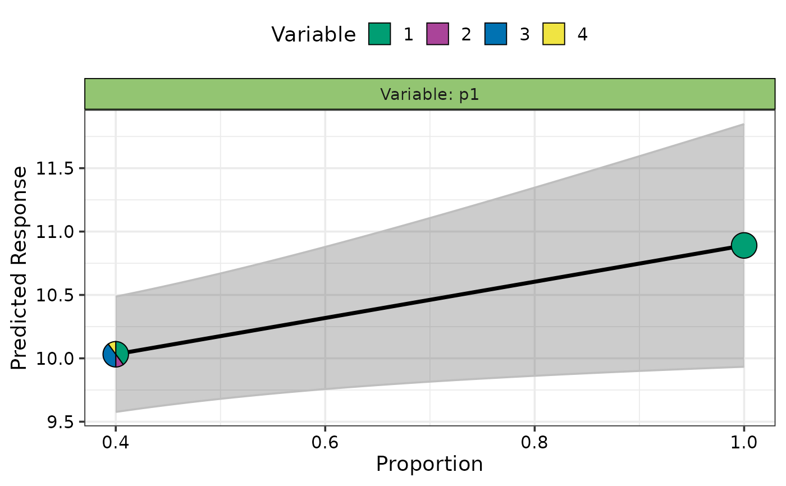
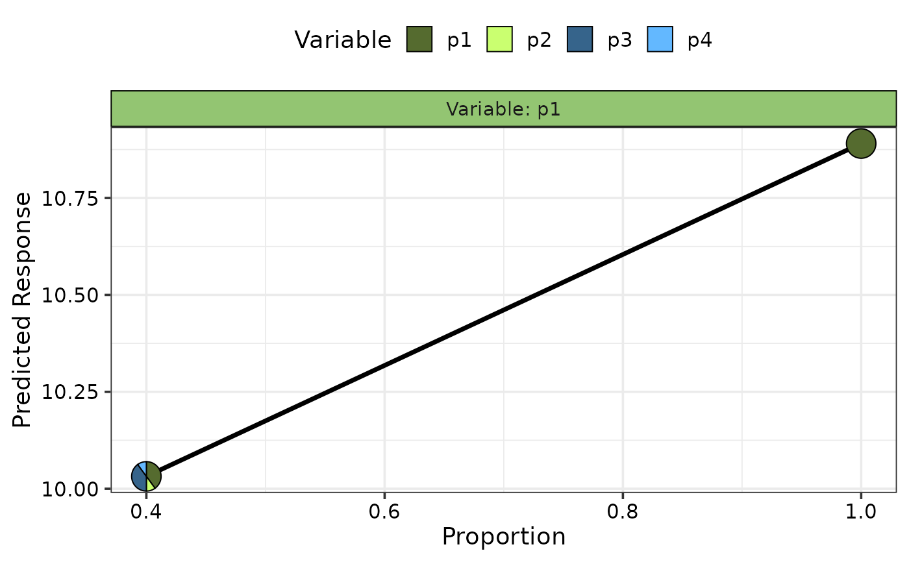
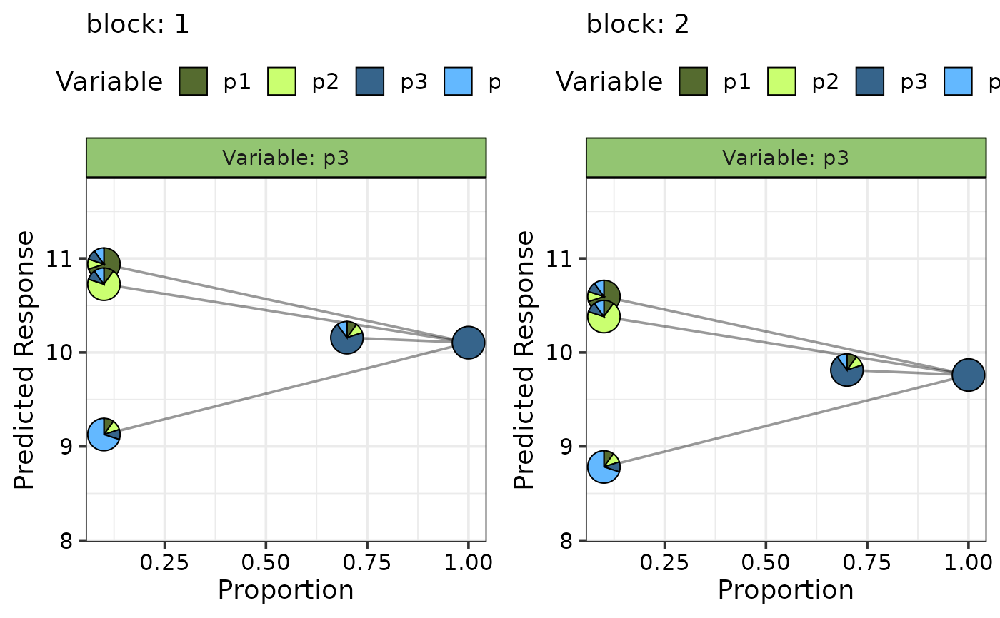

Effects plot for compositional data
visualise_effects_plot.RdThe plotting function to create plots showing the effect of increasing or
decreasing the proportion of a variable from a set of compositional variables.
The output of the `visualise_effects_data` function (with any
desired modifications) should be passed here. The generated plot will show a
curve for each observation (whenever possible) in the data.
`Pie-glyphs` are
used to highlight the compositions of the specified communities and the ending
community after the variable of interest either completes dominates the community
(when looking at the effect of increase) or completely vanishes from the community
(when looking at the effect of decrease) or both.
Usage
visualise_effects_plot(
data,
prop,
pie_colours = NULL,
pie_radius = 0.3,
se = FALSE,
average = TRUE,
nrow = 0,
ncol = 0
)Arguments
- data
A data frame created using the
visualise_effects_datafunction.- prop
A vector of column names or indices identifying the columns containing the compositional variables in the data. Will be inferred from the data if it is created using the `
visualise_effects_data` function, but the user also has the flexibility of manually specifying the values.- pie_colours
A character vector indicating the colours for the slices in the pie-glyphs.
If left NULL, the colour blind friendly colours will be for the pie-glyph slices.- pie_radius
A numeric value specifying the radius (in cm) for the pie-glyphs. Default is 0.3 cm.
- se
A boolean variable indicating whether to plot confidence intervals associated with the effect of species increase or decrease
- average
A boolean value indicating whether to add a line describing the "average" effect of variable increase or decrease. The average is calculated at the median value of any variables not specified.
- nrow
Number of rows in which to arrange the final plot (when `add_var` is specified).
- ncol
Number of columns in which to arrange the final plot (when `add_var` is specified).
Value
A ggmultiplot (ggplot if single plot is returned) class object or data-frame (if `plot = FALSE`)
Examples
library(DImodels)
## Load data
data(sim1)
## Fit model
mod <- glm(response ~ p1 + p2 + p3 + p4 + 0, data = sim1)
## Create data for visualising effect of adding species 1 to
## the original communities in the data
plot_data <- visualise_effects_data(data = sim1[sim1$block == 1, ],
prop = c("p1", "p2", "p3", "p4"),
var_interest = "p1",
effect = "increase", model = mod)
#> ✔ Finished data preparation.
## Create plot
visualise_effects_plot(data = plot_data)
#> ✔ Created plot.
## Show specific curves with prediction intervals
subset <- custom_filter(plot_data, .Group %in% c(7, 15))
visualise_effects_plot(data = subset, prop = 1:4, se = TRUE)
#> ✔ Created plot.

## Do not show average effect line
visualise_effects_plot(data = subset,
se = TRUE, average = FALSE)
#> ✔ Created plot.
## Change colours of the pie-glyph slices
visualise_effects_plot(data = subset,
pie_colours = c("darkolivegreen", "darkolivegreen1",
"steelblue4", "steelblue1"))
#> ✔ Created plot.

#' ## Simultaneously create multiple plots for additional variables
sim1$block <- as.numeric(sim1$block)
new_mod <- update(mod, ~ . + block, data = sim1)
plot_data <- visualise_effects_data(data = sim1[c(1, 5, 9, 13), 3:6],
prop = c("p1", "p2", "p3", "p4"),
var_interest = "p3",
model = new_mod, conf.level = 0.95,
add_var = list("block" = c(1, 2)))
#> ✔ Finished data preparation.
visualise_effects_plot(data = plot_data,
average = FALSE,
pie_colours = c("darkolivegreen", "darkolivegreen1",
"steelblue4", "steelblue1"))
#> ✔ Created all plots.
